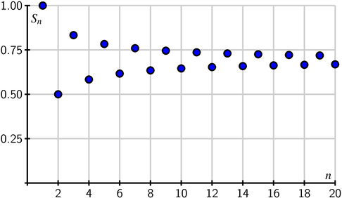
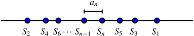

{In this section, we strive to understand the ideas generated by the following important questions:
What is an alternating series?
What does it mean for an alternating series to converge?
Under what conditions does an alternating series converge? Why?
How well does the \(n\)th partial sum of a convergent alternating series approximate the actual sum of the series? Why?
What is the difference between absolute convergence and conditional convergence?
}
Subsection8.4.1Introduction
In our study of series so far, almost every series that we've considered has exclusively nonnegative terms. Of course, it is possible to consider series that have some negative terms. For instance, if we consider the geometric series
which has \(a = 2\) and \(r = -\frac{2}{3}\), we see that not only does every other term alternate in sign, but also that this series converges to
\[
S = \frac{a}{1-r} = \frac{2}{1- \left(-\frac{2}{3}\right)} = \frac{6}{5}.
\]
In Preview Activity and our following discussion, we investigate the behavior of similar series where consecutive terms have opposite signs.
Preview Activity
Preview Activity showed how we can approximate the number \(e\) with linear, quadratic, and other polynomial approximations. We use a similar approach in this activity to obtain linear and quadratic approximations to \(\ln(2)\). Along the way, we encounter a type of series that is different than most of the ones we have seen so far. Throughout this activity, let \(f(x) = \ln(1+x)\).
Find the tangent line to \(f\) at \(x=0\) and use this linearization to approximate \(\ln(2)\). That is, find \(L(x)\), the tangent line approximation to \(f(x)\), and use the fact that \(L(1) \approx f(1)\) to estimate \(\ln(2)\).
Solution
The linearization of \(f\) at \(x=a\) is
\[
f(a) + f'(a)(x-a),
\]
so the linearization \(P_1(x)\) of \(f(x) = \ln(1+x)\) at \(x=0\) is
\[
P_1(x) = 0 + \frac{1}{1+0}(x-0) = x.
\]
Now
\[
f(x) \approx P_1(x)
\]
for \(x\) close to \(0\) and so
\[
\ln(2) = \ln(1+1) \approx P_1(1) = 1.
\]
The linearization of \(\ln(1+x)\) does not provide a very good approximation to \(\ln(2)\) since 1 is not that close to 0. To obtain a better approximation, we alter our approach; instead of using a straight line to approximate \(\ln(2)\), we use a quadratic function to account for the concavity of \(\ln(1+x)\) for \(x\) close to 0. With the linearization, both the function's value and slope agree with the linearization's value and slope at \(x=0\). We will now make a quadratic approximation \(P_2(x)\) to \(f(x) = \ln(1+x)\) centered at \(x=0\) with the property that \(P_2(0) = f(0)\), \(P'_2(0) = f'(0)\), \text{and} \(P''_2(0) = f''(0)\).
Let \(P_2(x) = x - \frac{x^2}{2}\). Show that \(P_2(0) = f(0)\), \(P'_2(0) = f'(0)\), \text{and} \(P''_2(0) = f''(0)\). Use \(P_2(x)\) to approximate \(\ln(2)\) by using the fact that \(P_2(1) \approx f(1)\).
Solution
We can continue approximating \(\ln(2)\) with polynomials of larger degree whose derivatives agree with those of \(f\) at 0. This makes the polynomials fit the graph of \(f\) better for more values of \(x\) around 0. For example, let \(P_3(x) = x - \frac{x^2}{2}+\frac{x^3}{3}\). Show that \(P_3(0) = f(0)\), \(P'_3(0) = f'(0)\), \(P''_3(0) = f''(0)\), and \(P'''_3(0) = f'''(0)\). Taking a similar approach to preceding questions, use \(P_3(x)\) to approximate \(\ln(2)\).
Solution
If we used a degree 4 or degree 5 polynomial to approximate \(\ln(1+x)\), what approximations of \(\ln(2)\) do you think would result? Use the preceding questions to conjecture a pattern that holds, and state the degree 4 and degree 5 approximation.
Preview Activity gives us several approximations to \(\ln(2)\), the linear approximation is 1 and the quadratic approximation is \(1 - \frac{1}{2} = \frac{1}{2}\). If we continue this process we will obtain approximations from cubic, quartic (degree 4), quintic (degree 5), and higher degree polynomials giving us the following approximations to \(\ln(2)\):
where the alternating signs are determined by the factor \((-1)^{k+1}\).
Using computational technology, we find that 0.6881721793 is the sum of the first 100 terms in this series. As a comparison, \(\ln(2) \approx 0.6931471806\). This shows that even though the series (8.4.1) converges to \(\ln(2)\), it must do so quite slowly, since the sum of the first 100 terms isn't particularly close to \(\ln(2)\). We will investigate the issue of how quickly an alternating series converges later in this section. Again, note particularly that the series (8.4.1) is different from the series we have consider earlier in that some of the terms are negative. We call such a series an alternating series\knownindex{\lt main>alternating series\lt /main>}.
Definition8.4.1
An alternating series is a series of the form
\[
\sum_{k=0}^{\infty} (-1)^k a_k,
\]
where \(a_k \geq 0\) for each \(k\).
We have some flexibility in how we write an alternating series; for example, the series
\[
\sum_{k=1}^{\infty} (-1)^{k+1} a_k,
\]
whose index starts at \(k = 1\), is also alternating. As we will soon see, there are several very nice results that hold about alternating series, while alternating series can also demonstrate some unusual behaivior.
It is important to remember that most of the series tests we have seen in previous sections apply only to series with nonnegative terms. Thus, alternating series require a different test. To investigate this idea, we return to the example in Preview Activity .
The entries in the sequence of partial sums from part (a) is shown in the figure below.
\resizebox{!}{1.25in}{ }
Notice that the partial sums seem to oscillate back and forth around some fixed number, getting closer to that fixed number at each successive step. So there appears to be a limit for this sequence of partial sums.
Activity 8.4.2 exemplifies the general behavior that any convergent alternating series will demonstrate. In this example, we see that the partial sums of the alternating harmonic series oscillate around a fixed number that turns out to be the sum of the series.
Recall that if \( \lim_{k \to \infty} a_k \neq 0\), then the series \(\sum a_k\) diverges by the Divergence Test. From this point forward, we will thus only consider alternating series
\[
\sum_{k=1}^{\infty} (-1)^{k+1} a_k
\]
in which the sequence \(a_k\) consists of positive numbers that decrease to 0. For such a series, the \(n\)th partial sum \(S_n\) satisfies
\[
S_n = \sum_{k=1}^n (-1)^{k+1} a_k.
\]
Notice that
\(S_1 = a_1\)
\(S_2 = a_1 - a_2\), and since \(a_1 > a_2\) we have
\[
0 \lt S_2 \lt S_1.
\]
\(S_3 = S_2+a_3\) and so \(S_2 \lt S_3\). But \(a_3 \lt a_2\), so \(S_3 \lt S_1\). Thus,
\[
0 \lt S_2 \lt S_3 \lt S_1.
\]
\(S_4 = S_3-a_4\) and so \(S_4 \lt S_3\). But \(a_4 \lt a_3\), so \(S_2 \lt S_4\). Thus,
\[
0 \lt S_2 \lt S_4 \lt S_3 \lt S_1.
\]
\(S_5 = S_4+a_5\) and so \(S_4 \lt S_5\). But \(a_5 \lt a_4\), so \(S_5 \lt S_3\). Thus,
\[
0 \lt S_2 \lt S_4 \lt S_5 \lt S_3 \lt S_1.
\]
This pattern continues as illustrated in Figure 8.4.4 (with \(n\) odd) so that each partial sum lies between the previous two partial sums. Note further that the absolute value of the difference between the \((n-1)\)st partial sum \(S_{n-1}\) and the \(n\)th partial sum \(S_n\) is
\[
\left| S_n - S_{n-1} \right| = a_n.
\]
Since the sequence \(\{a_n\}\) converges to 0, the distance between successive partial sums becomes as close to zero as we'd like, and thus the sequence of partial sums converges (even though we don't know the exact value to which the sequence of partial sums converges).
The preceding discussion has demonstrated the truth of the Alternating Series Test. \knownindex{\lt main>alternating series test\lt /main>}
Figure8.4.4Partial sums of an alternating series
{
The Alternating Series Test. The alternating series
\[
\sum (-1)^k a_k
\]
converges if and only if the sequence \(\{a_k\}\) of positive terms decreases to 0 as \(k \to \infty\).
}
Note particularly that if the limit of the sequence \(\{a_k\}\) is not 0, then the alternating series diverges.
Since \((k+1)^2 + 2 > k^2+2\) it follows that \(\frac{1}{(k+1)^2+2} \lt \frac{1}{k^2+2}\) and the sequence \(\frac{1}{k^2+2}\) decreases to 0. The Alternating Series Test shows then that the series \(\ds \sum_{k=1}^{\infty} \frac{(-1)^k}{k^2+2}\) converges.
In this case we have that \(\lim_{k \to \infty} \frac{2k}{k+5} = 2\) and so the sequence of \(k\)th terms does not even converge to 0. So the series \(\ds \sum_{k=1}^{\infty} \frac{2(-1)^{k+1}k}{k+5}\) diverges by the Divergence Test.
We know that the natural log is an increasing function, so \(\frac{1}{\ln(k)}\) is a decreasing function. It is also true that \(\lim_{k \to \infty} \frac{1}{\ln(k)} = 0\) and so the series \(\ds \sum_{k=2}^{\infty} \frac{(-1)^{k}}{\ln(k)}\) converges by the Alternating Series Test.
The argument for the Alternating Series Test also provides us with a method to determine how close the \(n\)th partial sum \(S_n\) is to the actual sum of a convergent alternating series. To see how this works, let \(S\) be the sum of a convergent alternating series, so
\[
S = \sum_{k=1}^{\infty} (-1)^k a_k.
\]
Recall that the sequence of partial sums oscillates around the sum \(S\) so that
Therefore, the value of the term \(a_{n+1}\) provides an error estimate for how well the partial sum \(S_n\) approximates the actual sum \(S\). We summarize this fact in the statement of the Alternating Series Estimation Theorem. \knownindex{\lt main>alternating series estimation theorem\lt /main>}
{
Alternating Series Estimation Theorem. If the alternating series
\[
\sum_{k=1}^{\infty} (-1)^{k+1}a_k
\]
converges and has sum \(S\), and
\[
S_n = \sum_{k=1}^{n} (-1)^{k+1}a_k
\]
is the \(n\)th partial sum of the alternating series, then
First note that the sequence \(\ds \left\{\frac{1}{k^4}\right\}\) decreases to 0, so the series \(\ds \sum_{k=1}^{\infty} \frac{(-1)^{k+1}}{k^4}\) converges by the Alternating Series Test. Let \(S\) be the sum \(\ds \sum_{k=1}^{\infty} \frac{(-1)^{k+1}}{k^4}\) and \(S_n\) the \(n\)th partial sum of the series. We know that
\[
|S - S_n| \lt a_{n+1} = \frac{1}{(n+1)^4}.
\]
So we only need to determine the value of \(n\) so that
\[
\frac{1}{(n+1)^4} \lt 0.0001.
\]
This happens when \((n+1)^4 \lt 10000\) or when \(n+1 > 10\). So \(n = 10\) will do. A computer algebra system gives \(S_{10} \approx 0.9469925924\) while \(\frac{7}{720} \pi^4 \approx 0.9470328299\). These do agree to \(0.0001\).
Subsection8.4.2Absolute and Conditional Convergence
whose terms are neither all nonnegative nor alternating is different from any series that we have considered to date. The behavior of these series can be rather complicated, but there is an important connection between these arbitrary series that have some negative terms and series with all nonnegative terms that we illustrate with the next activity.
Explain why the series
\[
1 - \frac{1}{4} - \frac{1}{9} + \frac{1}{16} + \frac{1}{25} + \frac{1}{36} - \frac{1}{49} - \frac{1}{64} - \frac{1}{81} - \frac{1}{100} + \cdots
\]
must have a sum that is less than the series
\[
\sum_{k=1}^{\infty} \frac{1}{k^2}.
\]
Explain why the series
\[
1 - \frac{1}{4} - \frac{1}{9} + \frac{1}{16} + \frac{1}{25} + \frac{1}{36} - \frac{1}{49} - \frac{1}{64} - \frac{1}{81} - \frac{1}{100} + \cdots
\]
must have a sum that is greater than the series
\[
\sum_{k=1}^{\infty} -\frac{1}{k^2}.
\]
Given that the terms in the series
\[
1 - \frac{1}{4} - \frac{1}{9} + \frac{1}{16} + \frac{1}{25} + \frac{1}{36} - \frac{1}{49} - \frac{1}{64} - \frac{1}{81} - \frac{1}{100} + \cdots
\]
converge to 0, what do you think the previous two results tell us about the convergence status of this series?
Each term in the series
\[
1 - \frac{1}{4} - \frac{1}{9} + \frac{1}{16} + \frac{1}{25} + \frac{1}{36} - \frac{1}{49} - \frac{1}{64} - \frac{1}{81} - \frac{1}{100} + \cdots
\]
is of the form \(\frac{1}{k^2}\) or \(-\frac{1}{k^2}\). Since each of these terms is less than or equal to \(\frac{1}{k^2}\) it follows that
\[
1 - \frac{1}{4} - \frac{1}{9} + \frac{1}{16} + \frac{1}{25} + \frac{1}{36} - \frac{1}{49} - \frac{1}{64} - \frac{1}{81} - \frac{1}{100} + \cdots \lt \sum_{k=1}^{\infty} \frac{1}{k^2}.
\]
Each term in the series
\[
1 - \frac{1}{4} - \frac{1}{9} + \frac{1}{16} + \frac{1}{25} + \frac{1}{36} - \frac{1}{49} - \frac{1}{64} - \frac{1}{81} - \frac{1}{100} + \cdots
\]
is of the form \(\frac{1}{k^2}\) or \(-\frac{1}{k^2}\). Since each of these terms is greater than or equal to \(-\frac{1}{k^2}\) it follows that
\[
1 - \frac{1}{4} - \frac{1}{9} + \frac{1}{16} + \frac{1}{25} + \frac{1}{36} - \frac{1}{49} - \frac{1}{64} - \frac{1}{81} - \frac{1}{100} + \cdots > \sum_{k=1}^{\infty} -\frac{1}{k^2}.
\]
We know that \(\ds \sum_{k=1}^{\infty} \frac{1}{k^2}\) is a \(p\)-series with \(p = 2 > 1\) and so is a convergent series. Since \(\ds \sum_{k=1}^{\infty} \frac{1}{k^2} = -\ds \sum_{k=1}^{\infty} \frac{1}{k^2}\), the series \(\ds \sum_{k=1}^{\infty} -\frac{1}{k^2}\) also converges. Since the terms in the series
\[
1 - \frac{1}{4} - \frac{1}{9} + \frac{1}{16} + \frac{1}{25} + \frac{1}{36} - \frac{1}{49} - \frac{1}{64} - \frac{1}{81} - \frac{1}{100} + \cdots
\]
converge to 0 and the series itself is bounded between two convergent series, we should expect this series to converge to some finite number between \(\ds \sum_{k=1}^{\infty} -\frac{1}{k^2}\) and \(\ds \sum_{k=1}^{\infty} \frac{1}{k^2}\).
As the example in Activity 8.4.8 suggests, if we have a series \( \sum a_k,\)
(some of whose terms may be negative) such that
\( \sum |a_k|\)
converges, it turns out to always be the case that the original series, \( \sum a_k\), must also converge. That is,
if \( \sum | a_k |\) converges, then so must \( \sum a_k.\)
As we just observed, this is the case for the series (8.4.2), since the corresponding series of the absolute values of its terms is the convergent \(p\)-series \( \sum \frac{1}{k^2}\). At the same time, there are series like the alternating harmonic series \( \sum (-1)^{k+1} \frac{1}{k}\) that converge, while the corresponding series of absolute values, \( \sum \frac{1}{k}\), diverges. We distinguish between these behaviors by introducing the following language.
Definition8.4.9
Consider a series \(\sum a_k\).
The series \(\sum a_k\)converges absolutely (or is absolutely convergent) provided that \(\sum | a_k |\) converges.
The series \(\sum a_k\)converges conditionally (or is conditionally convergent) provided that \(\sum | a_k |\) diverges and \(\sum a_k\) converges.
In this terminology, the series (8.4.2) converges absolutely while the alternating harmonic series is conditionally convergent.
Consider the series \(\ds \sum (-1)^k \frac{\ln(k)}{k}\).
Does this series converge? Explain.
Does this series converge absolutely? Explain what test you use to determine your answer.
Consider the series \(\ds \sum (-1)^k \frac{\ln(k)}{k^2}\).
Does this series converge? Explain.
Does this series converge absolutely? Hint: Use the fact that \(\ln(k) \lt \sqrt{k}\) for large values of \(k\) and the compare to an appropriate \(p\)-series.
By L'Hopital's Rule we have
\[
\lim_{k \to \infty} \frac{\ln(k)}{k} = \lim_{k \to \infty} \frac{1}{k} = 0.
\]
Also, \(\frac{d}{dk} \frac{\ln(k)}{k} = \frac{1-ln(k)}{k^2}\) is negative when \(k > e\), so the sequence \(\left\{ \frac{\ln(k)}{k} \right\}\) ultimately decreases to 0. Since the first few terms in a series are irrelevant to its convergence or divergence, we conclude that the series \(\ds \sum (-1)^k \frac{\ln(k)}{k}\) converges by the Alternating Series test.
Note that
\begin{align*}
\lim_{t \to \infty} \int_{1}^{t} \frac{\ln(x}{x} \amp = \lim_{t \to \infty} \left. \frac{\ln(x)^2}{2} \right|_1^t\\
\amp = \lim_{t \to \infty} \frac{\ln(t)^2}{2}\\
\amp = \lim_{t \to \infty} \frac{\ln(t)^2}{2}\\
\amp = \infty.
\end{align*}
Since the improper integral diverges, the Integral Test shows that the series \(\ds \sum (-1)^k \frac{\ln(k)}{k}\) diverges. So the series \(\ds \sum (-1)^k \frac{\ln(k)}{k}\) converges conditionally.
\end{thmlist}
\begin{thmlist}
By L'Hopital's Rule we have
\[
\lim_{k \to \infty} \frac{\ln(k)}{k^2} = \lim_{k \to \infty} \frac{1}{2k^2} = 0.
\]
Also,
\[
\frac{d}{dk} \frac{\ln(k)}{k^2} = \frac{k-2kln(k)}{k^4} = \frac{1-2ln(k)}{k^3}
\]
is negative when \(k > e\), so the sequence \(\left\{ \frac{\ln(k)}{k^2} \right\}\) ultimately decreases to 0. Since the first few terms in a series are irrelevant to its convergence or divergence, we conclude that the series \(\ds \sum (-1)^k \frac{\ln(k)}{k^2}\) converges by the Alternating Series test.
Notice that
\[
\lim_{k \to \infty} \frac{ \ln(k) }{ k^{1/2} } = \lim_{k \to \infty} \frac{2}{k^{1/2}} = 0,
\]
So \(\frac{1}{\sqrt{k}}\) dominates \(\ln(k)\) and \(\ln(k) \lt sqrt{k}\) for large \(k\). It follows that
\[
\frac{\ln(k)}{k^2} \lt \frac{ \sqrt{k} }{k^2} = \frac{1}{k^{3/2}}
\]
for large \(k\). Therefore,
\[
\sum \frac{\ln(k)}{k^2} \lt \sum \frac{1}{k^{3/2}}
\]
for large \(k\). Since \(\ds \sum \frac{1}{k^{3/2}}\) is a \(p\)-series with \(p=\frac{3}{2} > 1\), the series \(\ds \sum \frac{1}{k^{3/2}}\) converges. This forces the series \(\sum \frac{\ln(k)}{k^2}\) to converge as well. So \(\ds \sum (-1)^k \frac{\ln(k)}{k^2}\) converges absolutely.
\end{thmlist}
Conditionally convergent series turn out to be very interesting. If the sequence \(\{a_n\}\) decreases to 0, but the series \(\sum a_k\) diverges, the conditionally convergent series \(\sum (-1)^k a_k\) is right on the borderline of being a divergent series. As a result, any conditionally convergent series converges very slowly. Furthermore, some very strange things can happen with conditionally convergent series, as illustrated in some of the exercises.
Subsection8.4.3Summary of Tests for Convergence of Series
We have discussed several tests for convergence/divergence of series in our sections and in exercises. We close this section of the text with a summary of all the tests we have encountered, followed by an activity that challenges you to decide which convergence test to apply to several different series.
\begingroup
\footnotesize
\vphantom{{M}}Geometric Series \amp The geometric series \(\sum ar^k\) with ratio \(r\) converges for \(-1 \lt r \lt 1\) and diverges for \(|r| \geq 1\). \amp The sum of the convergent geometric series \(\displaystyle \sum_{k=0}^{\infty} ar^k\) is \(\frac{a}{1-r}\).
\vphantom{{M}} Divergence Test \amp If the sequence \(a_n\) does not converge to 0, then the series \(\sum a_k\) diverges. \amp This is the first test to apply because the conclusion is simple. However, if \(\lim_{n \to \infty} a_n = 0\), no conclusion can be drawn.
\endgroup
\begingroup
\footnotesize
\vphantom{{M}} Integral Test \amp
Let \(f\) be a positive, decreasing function on an interval \([c,\infty]\) and let \(a_k = f(k)\) for each positive integer \(k \geq c\).
If \(\int_c^{\infty} f(t) \ dt\) converges, then \(\sum a_k\) converges.
If \( \int_c^{\infty} f(t) \ dt\) diverges, then \(\sum a_k\) diverges.
\amp Use this test when \(f(x)\) is easy to integrate.
\vphantom{{M}} Direct Comparision Test (see Ex 4 in Section 8.3) \amp Let \(0 \leq a_k \leq b_k\) for each positive integer \(k\).
If \(\sum b_k\) converges, then \(\sum a_k\) converges.
If \(\sum a_k\) diverges, then \(\sum b_k\) diverges.
\amp Use this test when you have a series with known behavior that you can compare to – this test can be difficult to apply.
\vphantom{{M}} Limit Comparison Test \amp Let \(a_n\) and \(b_n\) be sequences of positive terms. If
\[
\displaystyle \lim_{k \to \infty} \frac{a_k}{b_k} = L
\]
for some positive finite number \(L\), then the two series \(\sum a_k\) and \(\sum b_k\) either both converge or both diverge. \amp Easier to apply in general than the comparison test, but you must have a series with known behavior to compare. Useful to apply to series of rational functions.
\vphantom{{M}} Ratio Test \amp Let \(a_k \neq 0\) for each \(k\) and suppose
\[
\displaystyle \lim_{k \to \infty} \frac{|a_{k+1}|}{|a_k|} = r.
\]
If \(r \lt 1\), then the series \(\sum a_k\) converges absolutely.
If \(r > 1\), then the series \(\sum a_k\) diverges.
If \(r=1\), then test is inconclusive.
\amp This test is useful when a series involves factorials and powers.
\vphantom{{M}} Root Test (see Exercise 2 in Section 8.3) \amp Let \(a_k \geq 0\) for each \(k\) and suppose
\[
\displaystyle \lim_{k \to \infty} \sqrt[k]{a_k} = r.
\]
If \(r \lt 1\), then the series \(\sum a_k\) converges.
If \(r > 1\), then the series \(\sum a_k\) diverges.
If \(r=1\), then test is inconclusive.
\amp In general, the Ratio Test can usually be used in place of the Root Test. However, the Root Test can be quick to use when \(a_k\) involves \(k\)th powers.
\vphantom{{M}} Alternating Series Test \amp If \(a_n\) is a positive, decreasing sequence so that \(\displaystyle \lim_{n \to \infty} a_n = 0\), then the alternating series \(\sum (-1)^{k+1} a_k\) converges. \amp This test applies only to alternating series – we assume that the terms \(a_n\) are all positive and that the sequence \(\{a_n\}\) is decreasing.
\vphantom{{M}} Alternating Series Estimation Theorem \amp Let \(S_n = \displaystyle \sum_{k=1}^n (-1)^{k+1} a_k\) be the \(n\)th partial sum of the alternating series \(\displaystyle \sum_{k=1}^{\infty} (-1)^{k+1} a_k\). Assume \(a_n > 0\) for each positive integer \(n\), the sequence \(a_n\) decreases to 0 and \(\displaystyle \lim_{n \to \infty} S_n = S\). Then it follows that
\(|S - S_n| \lt a_{n+1}.\)
\amp This bound can be used to determine the accuracy of the partial sum \(S_n\) as an approximation of the sum of a convergent alternating series.
For (a)-(j), use appropriate tests to determine the convergence or divergence of the following series. Throughout, if a series is a convergent geometric series, find its sum.
Determine a value of \(n\) so that the \(n\)th partial sum \(S_n\) of the alternating series \(\ds \sum_{n=2}^{\infty} \frac{(-1)^n}{\ln(n)}\) approximates the sum to within 0.001.
For large values of \(k\), \(\frac{2}{\sqrt{k-2}}\) looks like \(\frac{2}{\sqrt{k}}\). We will use the Limit Comparison Test to compare these two series:
\begin{align*}
\lim_{k \to \infty} \frac{\frac{2}{\sqrt{k-2}}}{\frac{2}{\sqrt{k}}} \amp = \lim_{k \to \infty} \frac{\sqrt{k}}{\sqrt{k-2}}\\
\amp = \lim_{k \to \infty} \sqrt{\frac{1}{1-\frac{2}{k}}}\\
\amp = 1.
\end{align*}
Since this limit is a positive constant, we know that the two series \(\ds \sum_{k=3}^{\infty} \ \frac{2}{\sqrt{k-2}}\) and \(\ds \sum_{k=3}^{\infty} \ \frac{2}{\sqrt{k}}\) either both converge or both diverge. Now \(\ds \sum_{k=3}^{\infty} \ \frac{2}{\sqrt{k}} = 2\sum_{k=3}^{\infty} \ \frac{1}{k^{1/2}}\) is constant times a \(p\)-series with \(p=\frac{1}{2}\), so \(\ds \sum_{k=3}^{\infty} \ \frac{2}{\sqrt{k}}\) diverges. Therefore, \(\ds \sum_{k=3}^{\infty} \ \frac{2}{\sqrt{k-2}}\) diverges as well.
Note that
\[
\lim_{k \to \infty} \frac{k}{1+2k} = \lim_{k \to \infty} \frac{k}{2k} = \frac{1}{2},
\]
so the Divergence Test shows that \(\ds \sum_{k=1}^{\infty} \ \frac{k}{1+2k}\) diverges.
For large values of \(k\), \(\frac{2k^2+1}{k^3+k+1}\) looks like \(\frac{2}{k}\). We will use the Limit Comparison Test to compare these two series:
\begin{align*}
\lim_{k \to \infty} \frac{\frac{2k^2+1}{k^3+k+1}}{\frac{2}{k}} \amp = \lim_{k \to \infty} \frac{(2k^2+1)k}{2(k^3+k+1)}\\
\amp = \lim_{k \to \infty} \frac{2 + \frac{1}{k^2}}{2+\frac{1}{k^2}+\frac{1}{k^3}}\\
\amp = 1.
\end{align*}
Since this limit is a positive constant, we know that the two series \(\ds \sum_{k=1}^{\infty} \ \frac{2k^2+1}{k^3+k+1}\) and \(\ds \sum_{k=1}^{\infty} \ \frac{2}{k}\) either both converge or both diverge. Now \(\ds \sum_{k=1}^{\infty} \ \frac{2}{k} = 2\sum_{k=1}^{\infty} \ \frac{1}{k}\) is constant times a \(p\)-series with \(p=1\), so \(\ds \sum_{k=1}^{\infty} \ \frac{2}{k}\) diverges. Therefore, \(\ds \sum_{k=0}^{\infty} \ \frac{2k^2+1}{k^3+k+1}\) diverges as well.
Series that involve factorials are good candidates for the Ratio Test:
\begin{align*}
\lim_{k \to \infty} \frac{\frac{100^{k+1}}{(k+1)!}}{\frac{100^k}{k!}} \amp = \lim_{k \to \infty} \frac{100^{k+1}k!}{100^k(k+1)!}\\
\amp = \lim_{k \to \infty} \frac{100}{k+1}\\
\amp = 0.
\end{align*}
Since this limit is 0, the Ratio Test tells us that the series \(\ds \sum_{k=0}^{\infty} \ \frac{100^k}{k!}\) converges.
Notice that \(\ds \sum_{k=1}^{\infty} \ \frac{2^k}{5^k} = \sum_{k=1}^{\infty} \ \left(\frac{2}{5}\right)^k\) is a geometric series with ratio \(\frac{2}{5}\). Let's write out the first few terms to identify the value of \(a\):
\[
\sum_{k=1}^{\infty} \ \left(\frac{2}{5}\right)^k = \frac{2}{5} + \left(\frac{2}{5}\right)^2 + \left(\frac{2}{5}\right)^3 + \cdots = \left(\frac{2}{5}\right)\left[ 1 + \frac{2}{5} + \left(\frac{2}{5}\right)^2 + \cdots \right].
\]
So \(a = \frac{2}{5}\). Since the ratio of this geometric series is between \(-1\) and 1, the series converges. The sum of the series is
\[
\sum_{k=1}^{\infty} \ \frac{2^k}{5^k} = \left(\frac{2}{5}\right) \left(\frac{1}{1-\frac{2}{5}} \right) = \left(\frac{2}{5}\right)\left(\frac{5}{3}\right) = \frac{2}{3}.
\]
For large values of \(n\), \(\frac{k^3-1}{k^5+1}\) looks like \(\frac{k^3}{k^5}=\frac{1}{k^2}\). We will use the Limit Comparison Test to compare \(\ds \sum_{k=1}^{\infty} \ \frac{k^3-1}{k^5+1}\) and \(\ds \sum_{k=1}^{\infty} \ \frac{1}{k^2}\):
\begin{align*}
\lim_{k \to \infty} \frac{\frac{k^3-1}{k^5+1}}{\frac{1}{k^2}} \amp = \lim_{k \to \infty} \frac{k^5-k^2}{k^5+1}\\
\amp = \lim_{k \to \infty} \frac{1-\frac{1}{k^3}}{1+\frac{1}{k^5}}\\
\amp = 1.
\end{align*}
Since this limit is 1, we know that the two series \(\ds \sum_{k=1}^{\infty} \ \frac{k^3-1}{k^5+1}\) and \(\ds \sum_{k=1}^{\infty} \ \frac{1}{k^2}\) either both converge or both diverge. Now \(\ds \sum_{k=1}^{\infty} \ \frac{1}{k^2}\) is a \(p\)-series with \(p=2\), so \(\ds \sum_{k=1}^{\infty} \ \frac{1}{k^2}\) converges. Therefore, \(\ds \sum_{k=1}^{\infty} \ \frac{k^3-1}{k^5+1}\) converges as well.
This series looks geometric, but to be sure let's write out the first few terms of this series:
\[
\sum_{k=2}^{\infty} \ \frac{3^{k-1}}{7^k} = \frac{3}{7^2} + \frac{3^2}{7^3} + \frac{3^3}{7^4} + \cdots = \left( \frac{3}{7^2} \right) \left[1 + \frac{3}{7} + \left( \frac{3}{7} \right)^2 + \left( \frac{3}{7} \right)^3 + \cdots \right].
\]
So \(\ds \sum_{k=2}^{\infty} \ \frac{3^{k-1}}{7^k}\) is a geometric series with \(a = \frac{3}{49}\) and \(r = \frac{3}{7}\). Since the ratio of this geometric series is between \(-1\) and 1, the series converges. The sum of the series is
\begin{align*}
\sum_{k=2}^{\infty} \ \frac{3^{k-1}}{7^k} \amp = \left(\frac{3}{49}\right) \left(\frac{1}{1-\frac{3}{7}} \right)\\
\amp = \left(\frac{3}{49}\right)\left(\frac{7}{4}\right)\\
\amp = \frac{3}{28}.
\end{align*}
\(\ds \sum_{k=2}^{\infty} \ \frac{1}{k^k}\)
This series is an alternating series of the form \(\ds \sum_{k=1}^{\infty} (-1)^{k+1} a_k\) with \(a_k = \frac{1}{\sqrt{k+1}}\). Since
\[
\ds \lim_{k \to \infty} \frac{1}{\sqrt{k+1}} = 0
\]
and \(\frac{1}{\sqrt{k+1}}\) decreases to 0, the Alternating Series Test shows that \(\ds \sum_{k=1}^{\infty} \ \frac{(-1)^{k+1}}{\sqrt{k+1}}\) converges.
For this example we will use the Integral Test with the substitution \(w = \ln(x)\), \(dw = \frac{1}{x} \ dx\):
\begin{align*}
\displaystyle \int_2^{\infty} \frac{1}{x \ln(x)} \ dx \amp = \lim_{b \to \infty} \int_2^b \frac{1}{x \ln(x)} \ dx\\
\amp = \displaystyle \lim_{b \to \infty} \int_{\ln(2)}^{\ln(b)} \frac{1}{w} \ dw\\
\amp = \displaystyle \lim_{b \to \infty} \ln(w) \bigm|_{\ln(2)}^{\ln(b)}\\
\amp = \displaystyle \lim_{b \to \infty} \left[ \ln(\ln(b)) - \ln(\ln(2)) \right]\\
\amp = \infty.
\end{align*}
Since \(\ds \int_2^{\infty} \frac{1}{x \ln(x)} \ dx\) diverges, we conclude \(\ds \sum_{k=2}^{\infty} \ \frac{1}{k \ln(k)}\) diverges.
First note that the terms \(\frac{1}{\ln(k)}\) decrease to \(0\), so the Alternating Series Test shows that the alternating series \(\ds \sum_{k=2}^{\infty} \frac{(-1)^k}{\ln(k)}\) converges. Let \(S = \ds \sum_{k=2}^{\infty} \frac{(-1)^k}{\ln(k)}\) and let \(S_n\) be the \(n\)th partial sum of this series. Recall that
\[
|S_n - S| \lt |S_n - S_{n+1}| = a_{n+1}
\]
where \(a_{n+1} = \frac{1}{\ln(n+1)}\). If we can find a value of \(n\) so that \(a_{n+1} \lt 0.001\), then \(|S_n - S| \lt 0.001\) as desired. Now
\begin{align*}
a_{n+1} \amp \lt 0.001\\
\frac{1}{\ln(n+1)} \amp \lt 0.001\\
\ln(n+1) \amp > 1000\\
n+1 \amp > e^{1000}\\
n \amp > e^{1000}-1.
\end{align*}
So if we choose \(n = e^{1000}\), then \(S_n\) approximates the sum of the series to within 0.001. Notice that \(e^{1000} \approx 1.97 \times 10^{434}\) is a very large number. This shows that the series \(\ds \sum_{k=2}^{\infty} \frac{(-1)^k}{\ln(k)}\) converges very slowly.
\vfill
\item An alternating series is a series whose terms alternate in sign. In other words, an alternating series is a series of the form
\[
\sum (-1)^ka_k
\]
where \(a_k\) is a positive real number for each \(k\).
\item An alternating series \(\sum_{k=1}^{\infty} (-1)^ka_k\) converges if and only if its sequence \(\{S_n\}\) of partial sums converges, where
\[
S_n = \sum_{k=1}^{n} (-1)^ka_k.
\]
\item The sequence of partial sums of a convergent alternating series oscillates around and converge to the sum of the series if the sequence of \(n\)th terms converges to 0. That is why the Alternating Series Test shows that the alternating series \(\sum_{k=1}^{\infty} (-1)^ka_k\) converges whenever the sequence \(\{a_n\}\) of \(n\)th terms decreases to 0.
\item The difference between the \(n-1\)st partial sum \(S_{n-1}\) and the \(n\)th partial sum \(S_n\) of a convergent alternating series \(\sum_{k=1}^{\infty} (-1)^ka_k\) is \(|S_n - S_{n-1}| = a_n\). Since the partial sums oscillate around the sum \(S\) of the series, it follows that
\[
|S - S_n| \lt a_n.
\]
So the \(n\)th partial sum of a convergent alternating series \(\sum_{k=1}^{\infty} (-1)^ka_k\) approximates the actual sum of the series to within \(a_n\).
\hrulefill
\begin{exercises}
\item Conditionally convergent series converge very slowly. As an example, consider the famous formula 1 We will derive this formula in upcoming work.
In theory, the partial sums of this series could be used to approximate \(\pi\).
Show that the series in (8.4.3) converges conditionally.
Let \(S_n\) be the \(n\)th partial sum of the series in (8.4.3). Calculate the error in approximating \(\frac{\pi}{4}\) with \(S_{100}\) and explain why this is not a very good approximation.
Determine the number of terms it would take in the series (8.4.3) to approximate \(\frac{\pi}{4}\) to 10 decimal places. (The fact that it takes such a large number of terms to obtain even a modest degree of accuracy is why we say that conditionally convergent series converge very slowly.)
Solution
\begin{align*}
\frac{1}{2n+1} \amp \lt 10^{-10}\\
2n+1 \amp > 10^{10}\\
n \amp > \frac{10^{10}-1}{2}\\
n \amp > 4,999,999,999.5.
\end{align*}
\item We have shown that if \(\sum (-1)^{k+1} a_k\) is a convergent alternating series, then the sum \(S\) of the series lies between any two consecutive partial sums \(S_n\). This suggests that the average \(\frac{S_n+S_{n+1}}{2}\)
is a better approximation to \(S\) than is \(S_n\).
Show that \(\frac{S_n+S_{n+1}}{2} = S_n + \frac{1}{2}(-1)^{n+2} a_{n+1}\).
Solution
Since \(S_{n+1} = S_n + (-1)^{n+2}a_{n+1}\) we have
Use this revised approximation in (a) with \(n = 20\) to approximate \(\ln(2)\) given that
\[
\ln(2) = \sum_{k=1}^{\infty} (-1)^{k+1} \frac{1}{k}.
\]
Compare this to the approximation using just \(S_{20}\). For your convenience, \(S_{20} = \frac{155685007}{232792560}\).
\item In this exercise, we examine one of the conditions of the Alternating Series Test. Consider the alternating series
where the terms are selected alternately from the sequences \(\left\{\frac{1}{n}\right\}\) and \(\left\{-\frac{1}{n^2}\right\}\).
Explain why the \(n\)th term of the given series converges to 0 as \(n\) goes to infinity.
Solution
Since both sequences \(\left\{\frac{1}{n}\right\}\) and \(\left\{-\frac{1}{n^2}\right\}\) converge to 0 as \(n\) goes to infinity, we see that the sequence of \(n\)th terms of our series converge to 0 as \(n\) goes to infinity.
Rewrite the given series by grouping terms in the following manner:
\[
(1 - 1) + \left(\frac{1}{2} - \frac{1}{4}\right) + \left(\frac{1}{3} - \frac{1}{9}\right) + \left(\frac{1}{4} - \frac{1}{16}\right) + \cdots.
\]
Use this regrouping to determine if the series converges or diverges.
Solution
Notice that \(\frac{1}{k} - \frac{1}{k^2} = \frac{k-1}{k^2}\). So our series can be rewritten as
the Limit Comparison Test shows that the series \(\sum_{k=1}^{\infty} \frac{k-1}{k^2}\) behaves like the harmonic series \(\sum_{k=1}^{\infty} \frac{1}{k}\). Since the harmonic series diverges, it follows that the series \(\sum_{k=1}^{\infty} \frac{k-1}{k^2}\) diverges as well.
Explain why the condition that the sequence \(\{a_n\}\)decreases to a limit of 0 is included in the Alternating Series Test.
\item Conditionally convergent series exhibit interesting and unexpected behavior. In this exercise we examine the conditionally convergent alternating harmonic series \(\ds \sum_{k=1}^{\infty} \frac{(-1)^{k+1}}{k}\) and discover that addition is not commutative for conditionally convergent series. We will also encounter Riemann's Theorem concerning rearrangements of conditionally convergent series. Before we begin, we remind ourselves that
First we make a quick analysis of the positive and negative terms of the alternating harmonic series.
Show that the series \(\ds \sum_{k=1}^{\infty} \frac{1}{2k}\) diverges.
Show that the series \(\ds \sum_{k=1}^{\infty} \frac{1}{2k+1}\) diverges.
Based on the results of the previous parts of this exercise, what can we say about the sums \(\ds \sum_{k=C}^{\infty} \frac{1}{2k}\) and \(\ds \sum_{k=C}^{\infty} \frac{1}{2k+1}\) for any positive integer \(C\)? Be specific in your explanation.
Recall addition of real numbers is commutative; that is
\[
a + b = b + a
\]
for any real numbers \(a\) and \(b\). This property is valid for any sum of finitely many terms, but does this property extend when we add infinitely many terms together?
The answer is no, and something even more odd happens. Riemann's Theorem (after the nineteenth-century mathematician Georg Friedrich Bernhard Riemann) states that a conditionally convergent series can be rearranged to converge to any prescribed sum. More specifically, this means that if we choose any real number \(S\), we can rearrange the terms of the alternating harmonic series \(\ds \sum_{k=1}^{\infty} \frac{(-1)^{k+1}}{k}\) so that the sum is \(S\). To understand how Riemann's Theorem works, let's assume for the moment that the number \(S\) we want our rearrangement to converge to is positive. Our job is to find a way to order the sum of terms of the alternating harmonic series to converge to \(S\).
Explain how we know that, regardless of the value of \(S\), we can find a partial sum \(P_1\)\[
P_1 = \sum_{k=1}^{n_1} \frac{1}{2k+1} = 1 + \frac{1}{3} + \frac{1}{5} + \cdots + \frac{1}{2n_1+1}
\]
of the positive terms of the alternating harmonic series that equals or exceeds \(S\). Let
\[
S_1 = P_1.
\]
Explain how we know that, regardless of the value of \(S_1\), we can find a partial sum \(N_1\)\[
N_1 = -\sum_{k=1}^{m_1} \frac{1}{2k} = -\frac{1}{2} - \frac{1}{4} - \frac{1}{6} - \cdots - \frac{1}{2m_1}
\]
so that
\[
S_2 = S_1 + N_1 \leq S.
\]
Explain how we know that, regardless of the value of \(S_2\), we can find a partial sum \(P_2\)\[
P_2 = \sum_{k=n_1+1}^{n_2} \frac{1}{2k+1} = \frac{1}{2(n_1+1)+1} + \frac{1}{2(n_1+2)+1} + \cdots + \frac{1}{2n_2+1}
\]
of the remaining positive terms of the alternating harmonic series so that
\[
S_3 = S_2 + P_2 \geq S.
\]
Explain how we know that, regardless of the value of \(S_3\), we can find a partial sum
\[
N_2 = -\sum_{k=m_1+1}^{m_2} \frac{1}{2k} = -\frac{1}{2(m_1+1)} - \frac{1}{2(m_1+2)} - \cdots - \frac{1}{2m_2}
\]
of the remaining negative terms of the alternating harmonic series so that
\[
S_4 = S_3 + N_2 \leq S.
\]
Explain why we can continue this process indefinitely and find a sequence \(\{S_n\}\) whose terms are partial sums of a rearrangement of the terms in the alternating harmonic series so that \(\ds \lim_{n \to \infty} S_n = S\).